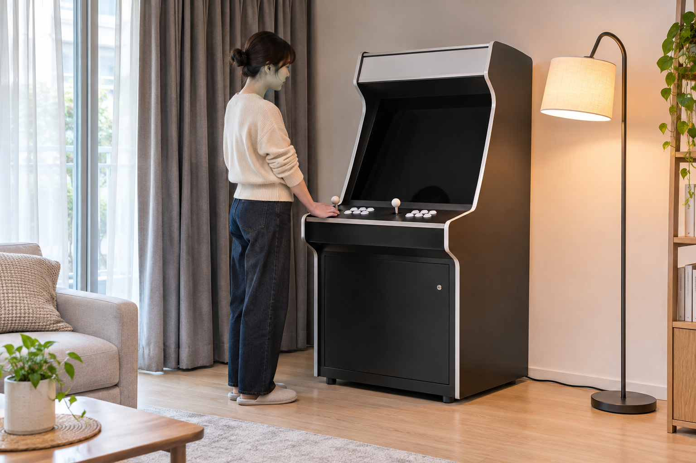
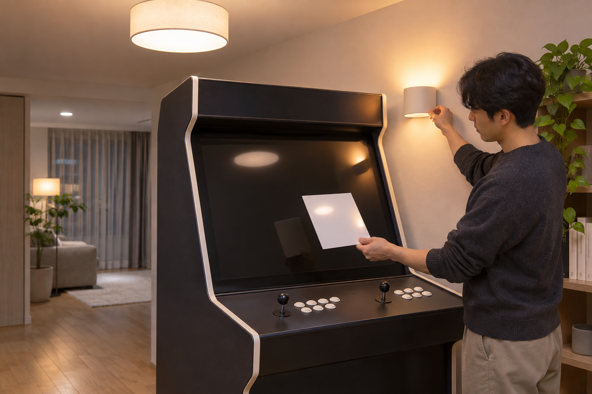

오락기 주변 조명은 화면 정면으로 빛이 들어오지 않도록 옆이나 뒤쪽으로 분산하고, 실제 조작 위치에서 화면 반사를 확인해 배치하세요. 화면만 어둡게 만드는 것보다 조작부와 오락기까지 오가는 바닥은 볼 수 있게 유지하며, 낮과 밤에 빛의 방향이 달라지는지도 따로 점검하는 것이 좋습니다.

실제 조작 위치에서 화면 반사를 확인하세요
전원을 끈 상태에서 평소 조작할 자리에 앉거나 서서 화면에 창문, 천장등, 스탠드 조명이 선명하게 비치는지 살펴보세요. 화면 앞에서만 확인하면 실제 시선에 들어오는 반사를 놓칠 수 있으므로 사용자의 눈높이와 거리에서 확인해야 합니다. 낮에는 창문 빛, 밤에는 실내등을 각각 켜 보고 반사 위치가 바뀌는지도 기록하세요.
화면 반사는 조명 바로 앞이 아니라 실제 조작 위치의 시선에서 확인해야 합니다.
화면과 시선을 맞추는 순서는 오락기 화면과 눈높이 조정 방법에서 함께 확인할 수 있습니다.

화면을 향하는 직접 조명을 피하세요
스탠드나 벽등은 화면을 정면으로 비추지 않게 옆쪽이나 벽을 향해 두고, 빛이 벽이나 천장에 퍼지도록 각도를 조정해 보세요. 조명을 본체 위에 임의로 올리거나 부착하면 흔들리거나 통풍구를 가릴 수 있으므로 제품 안내에 없는 설치는 피해야 합니다. 커튼이나 블라인드는 화면 반사를 줄이는 데 필요한 만큼 조절하되 환기와 이동을 방해하지 않는지 살펴보세요.
직접 조명보다 벽과 천장에 퍼지는 간접 조명이 화면 반사를 조절하기 쉽습니다.
통풍구와 주변 간격은 오락기 주변 통풍 공간 확인 방법에서 이어서 살펴보세요.
조작부와 이동 동선은 보이게 하세요
화면 반사를 피하려고 방 전체를 어둡게 만들기보다 조작부, 의자 주변, 출입문까지 이어지는 바닥을 구분할 수 있게 밝기를 남겨 두세요. 바닥 조명이나 스탠드 전선이 발에 걸리지 않는지 확인하고, 문을 여닫거나 가족이 지나갈 때 조명 기구와 부딪히지 않는 위치를 정해야 합니다. 조작부 바로 위의 강한 점광원보다 공간 전체에 고르게 퍼지는 빛이 배치하기 쉽습니다.
화면 반사를 줄이면서도 조작부와 이동 경로는 구분할 수 있어야 합니다.
전선 동선을 함께 정리하려면 오락기 케이블 정리 방법을 참고하세요.
낮과 밤의 조명 상태를 따로 기록하세요
설치 직후 낮과 밤에 같은 자리에서 화면과 주변을 사진으로 남기면 빛의 방향이 어떻게 달라지는지 비교하기 쉽습니다. 계절이나 가구 배치가 바뀐 뒤에도 같은 위치에서 다시 확인하고, 화면 반사를 피하려고 몸이나 고개를 계속 움직이게 되는지 살펴보세요. 제품을 기울이거나 분해하기 전에 커튼, 조명 각도, 의자 위치처럼 외부에서 바꿀 수 있는 조건부터 조정하세요.
낮과 밤의 조명 상태를 같은 위치에서 비교하면 필요한 조정을 찾기 쉽습니다.
노리박스 공개 제품 목록에는 27+와 32+처럼 화면 크기가 다른 제품과 TV 연결형 제품이 각각 안내되어 있습니다. 화면 위치와 설치 방식이 다를 수 있으므로 다른 제품의 사진을 기준으로 조명을 정하지 말고, 실제 사용하는 제품과 화면 위치에서 반사를 확인하세요.
현재 판매 중인 제품 형태는 제품자세히보기에서 확인할 수 있습니다. 조명과 화면 위치를 함께 정하기 어렵다면 문의하기에서 정확한 제품명과 설치 공간 사진을 알려 주세요.